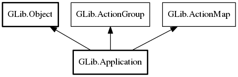

Application
Object Hierarchy:
Description:
A Application is the foundation of an application.
It wraps some low-level platform-specific services and is intended to act as the foundation for higher-level application classes such as
GtkApplication or MxApplication. In general, you should not use this class outside of a higher level framework.
GApplication provides convenient life cycle management by maintaining a "use count" for the primary application instance. The use count
can be changed using hold and
release. If it drops to zero, the application exits. Higher-level classes such
as GtkApplication employ the use count to ensure that the application stays alive as long as it has any opened windows.
Another feature that GApplication (optionally) provides is process uniqueness. Applications can make use of this functionality by providing a unique application ID. If given, only one application with this ID can be running at a time per session. The session concept is platform-dependent, but corresponds roughly to a graphical desktop login. When your application is launched again, its arguments are passed through platform communication to the already running program. The already running instance of the program is called the "primary instance"; for non-unique applications this is the always the current instance. On Linux, the D-Bus session bus is used for communication.
The use of Application differs from some other commonly-used uniqueness libraries (such as libunique) in
important ways. The application is not expected to manually register itself and check if it is the primary instance. Instead, the
main function of a Application should do very little more than instantiating the application instance,
possibly connecting signal handlers, then calling run. All checks for uniqueness
are done internally. If the application is the primary instance then the startup signal is emitted and the mainloop runs. If the
application is not the primary instance then a signal is sent to the primary instance and
run promptly returns. See the code examples below.
If used, the expected form of an application identifier is very close to that of of a DBus bus name. Examples include: "com.example.MyApp", "org.example.internal-apps.Calculator". For details on valid application identifiers, see id_is_valid.
On Linux, the application identifier is claimed as a well-known bus name on the user's session bus. This means that the uniqueness of your application is scoped to the current session. It also means that your application may provide additional services (through registration of other object paths) at that bus name. The registration of these object paths should be done with the shared GDBus session bus. Note that due to the internal architecture of GDBus, method calls can be dispatched at any time (even if a main loop is not running). For this reason, you must ensure that any object paths that you wish to register are registered before Application attempts to acquire the bus name of your application (which happens in register). Unfortunately, this means that you cannot use get_is_remote to decide if you want to register object paths.
GApplication also implements the ActionGroup and ActionMap interfaces and lets you easily export actions by adding them with add_action. When invoking an action by calling activate_action on the application, it is always invoked in the primary instance. The actions are also exported on the session bus, and GIO provides the DBusActionGroup wrapper to conveniently access them remotely. GIO provides a DBusMenuModel wrapper for remote access to exported MenuModels.
There is a number of different entry points into a GApplication:
- via 'Activate' (i.e. just starting the application)
- via 'Open' (i.e. opening some files)
- by handling a command-line
- via activating an action
The startup signal lets you handle the application initialization for all of these in a single place.
Regardless of which of these entry points is used to start the application, GApplication passes some "platform data from the launching
instance to the primary instance, in the form of a Variant dictionary mapping
strings to variants. To use platform data, override the before_emit or after_emit virtual functions in your
Application subclass. When dealing with
ApplicationCommandLine objects, the platform data is directly available via
get_cwd,
get_environ and
get_platform_data.
As the name indicates, the platform data may vary depending on the operating system, but it always includes the current directory (key
"cwd"), and optionally the environment (ie the set of environment variables and their values) of the calling process (key "environ"). The
environment is only added to the platform data if the g_application_send_environment flag is
set. Application subclasses can add their own platform data by overriding the add_platform_data
virtual function. For instance, GtkApplication adds startup notification data in this way.
To parse commandline arguments you may handle the command_line signal or
override the local_command_line vfunc, to parse them in either the primary instance or the local instance, respectively.
For an example of opening files with a GApplication, see gapplication-example-open.c.
For an example of using actions with GApplication, see gapplication-example-actions.c.
For an example of using extra D-Bus hooks with GApplication, see gapplication-example-dbushooks.c.
Namespace: GLib
Package: gio-2.0
Content:
Properties:
Static methods:
Creation methods:
Methods:
Signals:
Inherited Members:
All known members inherited from class GLib.Object

All known members inherited from interface GLib.ActionGroup
All known members inherited from interface GLib.ActionMap